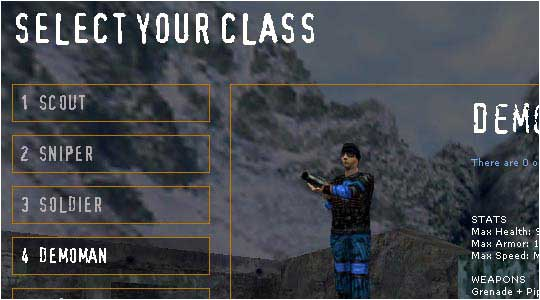
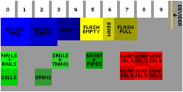
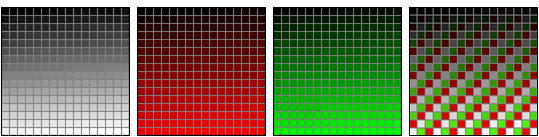

|
||||||||||||||||||||||||||||||||||||


| Tutorials | |
| How To Make Translucent Models - A tutorial that teaches people how to make either parts of, or all of, a model transluscent using the new rendering DLLs. | |
| Creating Natural Terrain Within The Quake 2 Engine - An awesome tutorial that I've had on my hard drive for years. It was written to create rocks with Quake2, but the techniques still apply in the Half-Life engine. Definatly worth the read, as it has taught me everything I know about creating outdoor environments. | |
| Menus - Download | |
|  | |
| I made these menus to go with my white theme. I read Dragline's tutorials on how to make menus, so I took a little time and actually made my own. I think they turned out perfectly, and I've been using them for a while now. You must read the readme, otherwise they won't work. | |
| Hud Coordinates - Download | |
|  | I made this psd file for people who would like to make HUDs. This file lays out all the spaces that each thing takes up and has each space labeled as to what goes there. Each thing that goes in each space can only take up as much space as the color behind it. This psd has a layer for the text, colored boxes, and behind that is the default HUD. I hope it helps. |
| Colorscales - Download | |
|  | |
| These scales are used to change HUDs from one color to another. Since there are only 3 colors you can have in a hud, (yellow, red, and green), I made a scale for each. I also added in a color scale with all 3 colors in them. This way, you can make a hud with all 3 colors. In photoshop, when you are changing from rgb to indexed color, just load one of these up as a custom color scale. | |
| Batch Compiler Final Compile Settings - Download | |
 | |
| These are the settings I used for my final compile on ss_nyx when I used batch compiler. I don't know how much help this would be to other people, but these are good settings for lighting, vis, etc. | |